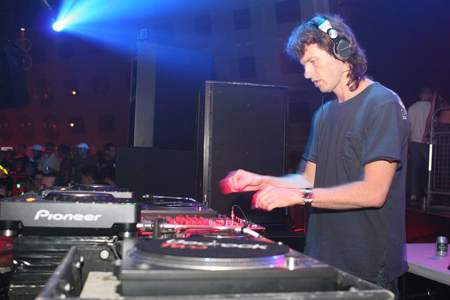

Hernan Cattaneo: Deep, melodic & groovy



“I have an approach to music that never changes,” Hernan Cattaneo revealed to ITM this week. “I like deep, melodic and groovy music. Sometimes emotional, sometimes dark. I look and find those elements in many different styles: from deep, to techy, to progressive and techno. I never rule out anything. If it sounds good and interesting to me, I play it. The big challenge then is to make them work good together in a set.”
Deep, melodic and groovy works as the perfect mantra for how the veteran South American DJ approaches his performances – as eclectic as they are, you always know when you’re listening to a DJ set from Hernan Cattaneo. And perhaps this mantra can go a long way to explaining the utter reverence that he inspires in his fans – maybe it’s a common love for the perfect balance he strikes in taking his sounds real deep, while still maintaining that melody, and establishing a solid house groove that never fails to inspire constant movement on the dancefloor.
Whatever the case, there’s hundreds of those afore-mentioned fans around the country who are salivating at the prospect of catching him performing in our clubs again this weekend. ITM’s Angus Paterson catches up with Hernan Cattaneo, who’s here to support his new release for Renaissance under the Master Series banner, and strike up some ‘deep, melodic grooves’ in the process.
It’s been a long wait between Australian tours for your fans, nearly 2 years. What stands out from your last few visits to Australia?
Last time was in 2007 and it was really good. The gig at the Brown Alley was really amazing, and both the festival and the afterparty in Sydney with James Zabiela and Nic Fanciulli were great fun. I’m very much looking forward to going back to play those cities, plus also this time will go to Brisbane where I’ve never been before. Last week speaking with Carl Cox, he told me that Brisbane is one of the best crowds in Australia, so I’m very excited to play there for the first time.
It’s a special kind of respect and reverence that your fans have for you. A lot of your admirers really do see what you bring to dance music as something that’s special and unique. Where does this come from do you think, and how does it make you feel?
I’m very grateful for that, and of course it makes me feel good. I can only say that I put all my efforts and always try my best to give people a good time and never let down my fans, and it seems like they realize that and support that attitude. I consider myself always true to my sound and I’m very honest with all I do. I never follow trends in music, and try to embrace all musical styles and then, put them all together in a set. I think some people like that kind of authentic and personal approach to music, and follow those kind of DJs.
On your upcoming tour you’ll be promoting your latest compilation for the Renaissance label. A new Hernan Cattaneo release is always something to look forward to, tell us a little about what we can expect from this one.
This is my third Masters Series and Renaissance’s 50th CD, so it’s going to be a extra special one. It made me feel really good to be in this position once again and at the same time, things have changed a lot in the past years regarding mix CDs. People’s access to music and DJ sets is really big now, so you need to deliver something different to get the attention and to make the whole thing worth it. You can see that with how people like Sasha decided to write and remix all the stuff for his Involver CDs.
My approach was about presenting something new and more “hands on”, compared to the previous compilations where I’ve only produced one or two tacks. For this Masters Series I did work on 12 tracks, between original material, remixes and edits, with different producers and also asked for some of my favorite producers to create stuff intended to be exclusive by the time the CD comes out. This way I am sure that 90 per cent of the CD is fresh and unheard when it’s out on May 25th, and that makes it interesting for the fans.
You’re known as a DJ who keeps on top of all forms of underground house music, and too hard to pin down to any particular sound. You’re also known as a master of being able to bring these sounds together with pacing and programming. How much thought do you put into your sets?
There are some elements that I must find in the tracks I like to play. Having said that, the programming is common sense to me. The flow comes from some basics that you learn when you begin to DJ. Things like how to start your set, how to set the mood, how to follow, how to move forward. You need to keep an eye on the crowd, they can tell you a lot if you pay attention.
Then of course there’s a lot of homework to get to that place. The more you hear the new stuff , the best chance you will play it the right way and at the right moment. Being patient is really important too. Also these days, listening to all the new stuff you get sent is really time consuming. Every week you get 300/400 emails with new stuff and it’s really hard to download and hear them all. But since you never know in advance, you want to check them all (even when only 5 per cent will end up in my sets). New music is really important too. In the last three or four years many fans have become obsessed with what tracks DJs play, and you end up having your videos of your sets on YouTube the day after the gig, so the only way to stay fresh is to constantly update your DJ bag with newer music.
Your Metrodance radio show would have to be been one of the most obsessively downloaded dance programs out there. Were you sad to see it end, and do you see it returning in some incarnation at some stage?
Good things come to an end, always. I’m really happy that for 8 years I did a show every week that showcased a certain kind of sound, and got so many followers around the world. I introduced tons of new producers from all over the world and opened the door of electronic music to many people, and that is a great reward for me. There are websites and forums dedicated to the show, and they are still going strong even when the show stopped a year ago. They have a bigger archive than I do. I put a big effort on playing 20 new tracks every single week for that long, so it’s very rewarding to see how much people liked it. I will someday go back to do a radio show, but not so soon. I used the show to push the music I like, and now I’ll do that through Sudbeat, my new digital label. It will start next month and I’m very exited about it.
Hernan Cattaneo tour dates:
Friday May 15th – The Likes Of You, Melbourne
Saturday May 16th – Likes Of You, Sydney
Sunday May 17th – Family Nightlcub, Brisbane